1. The spine
Warm paper, one column of text, and the whole life of a job drawn as a single line down the right side of the page. Every place the tool can refuse peels off that line and stops dead, in red.
The quietest of the three. It reads like a good technical book.
Open the spine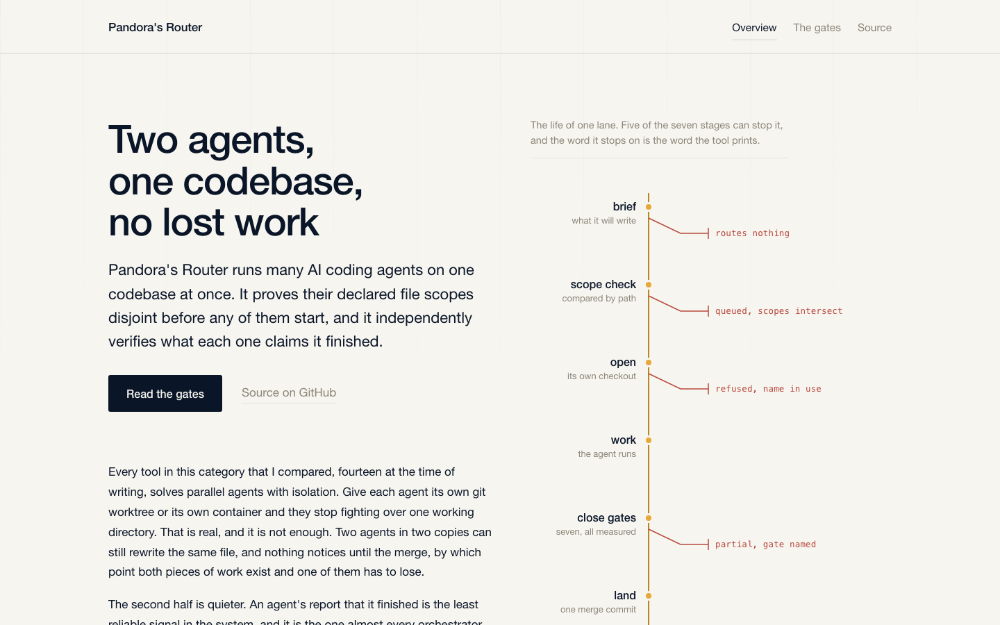
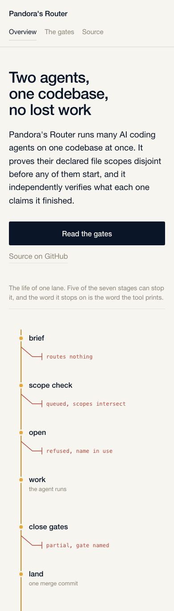
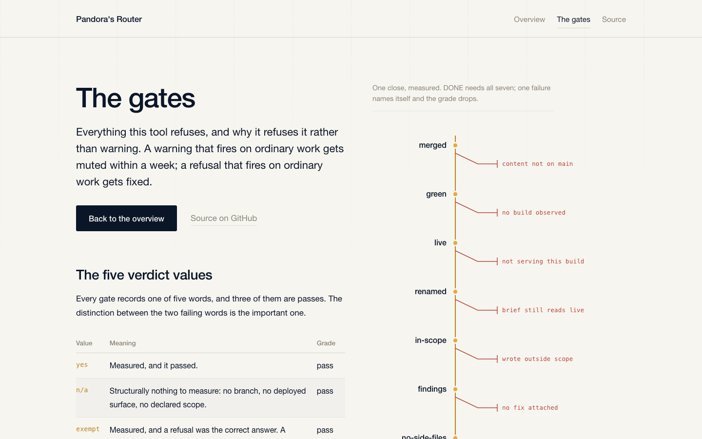
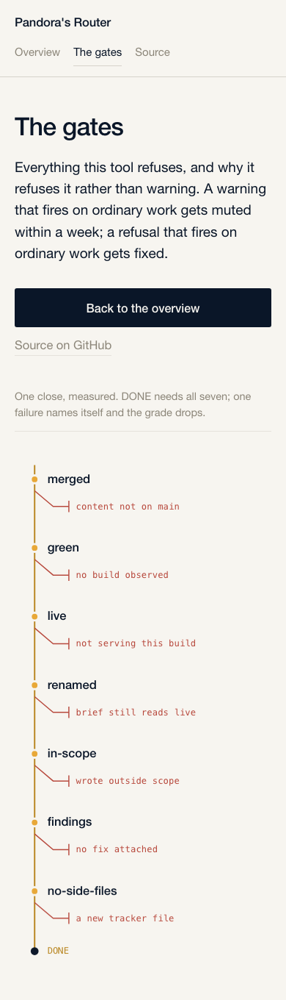
2. The switchboard
Dark navy, and the drawing runs left to right across the full width of the screen like a control panel. Every refusal hangs below the line in red, so the first thing you see is how many ways this thing says no. Further down, the tool's own printout runs off the edge of the page.
The boldest of the three, and the one that photographs best.
Open the switchboard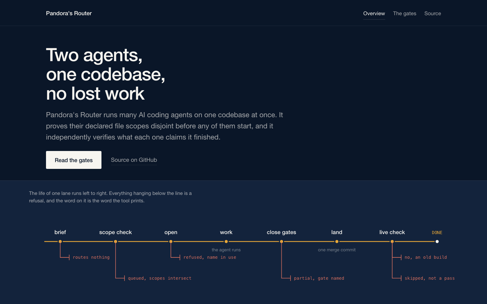
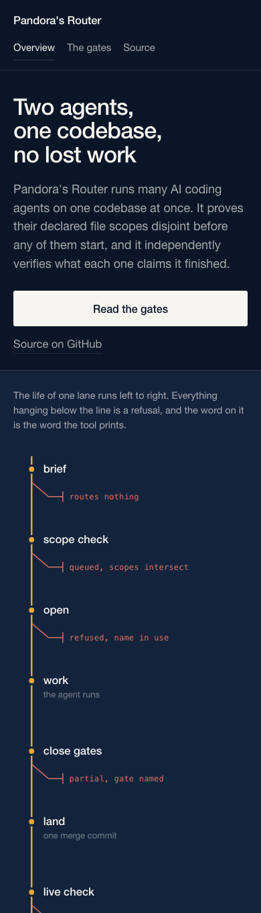
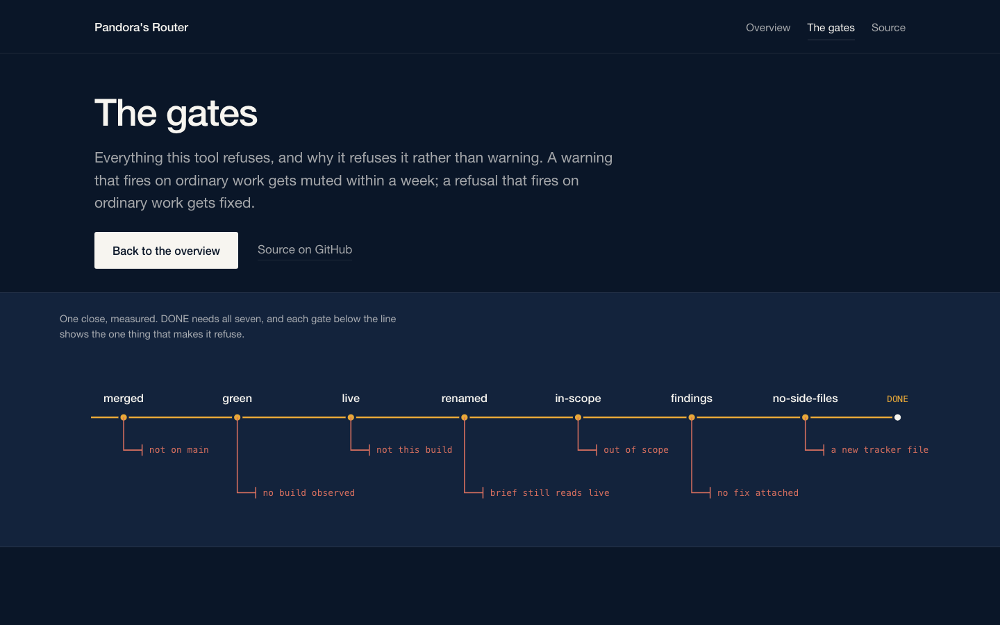
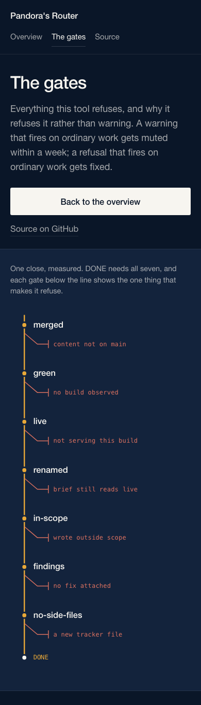
3. The atlas
A field manual. The drawing sits in a panel on the left and stays on screen the whole time you read, so you never lose the thread. Click a part of it and the other half fades back, which tells you where in the machine you are.
The most useful to read end to end, and the busiest first screen.
Open the atlas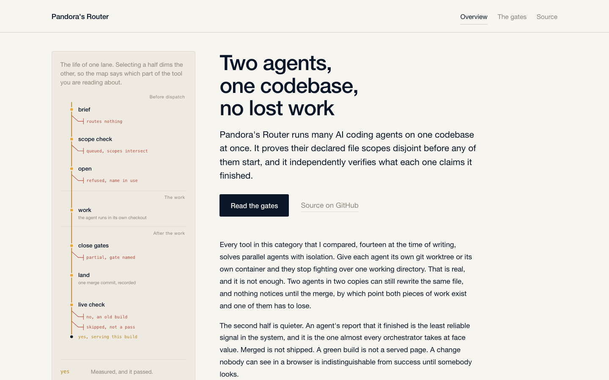
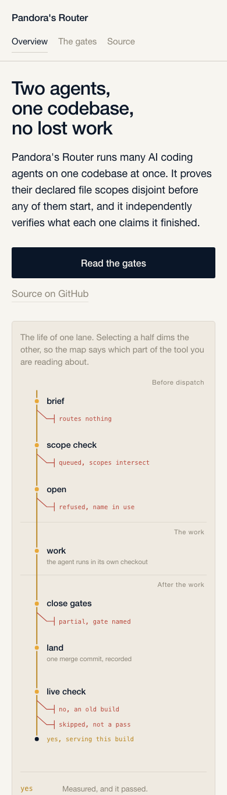
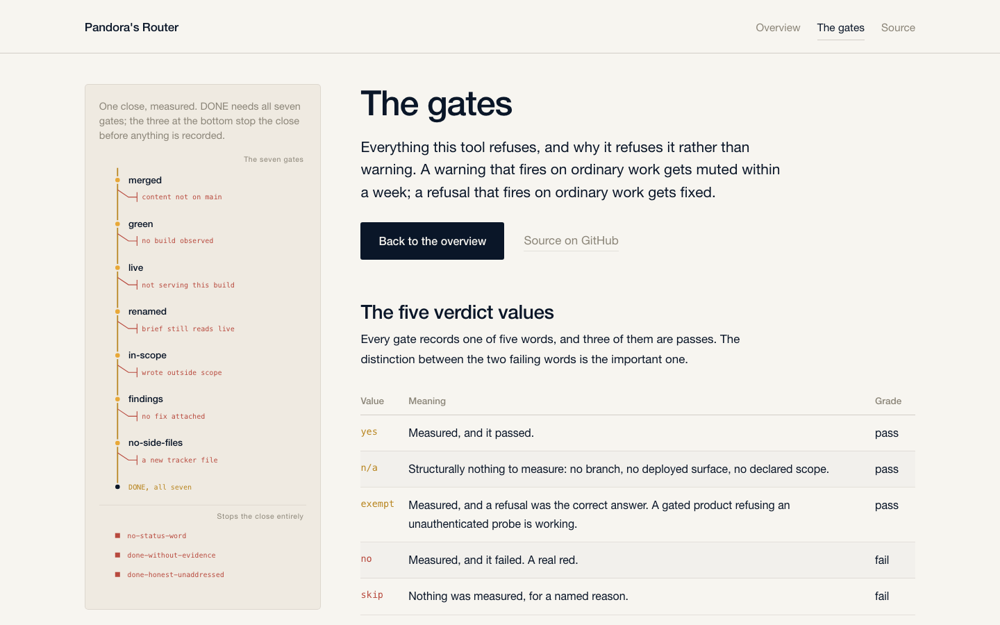
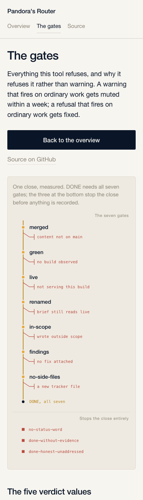